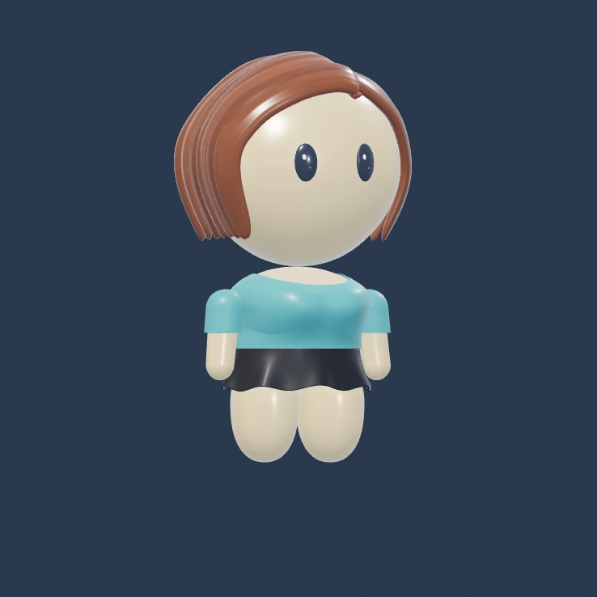
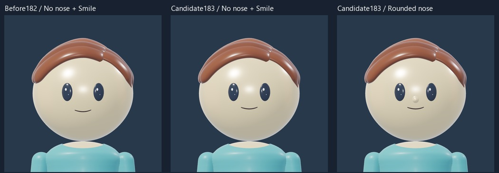
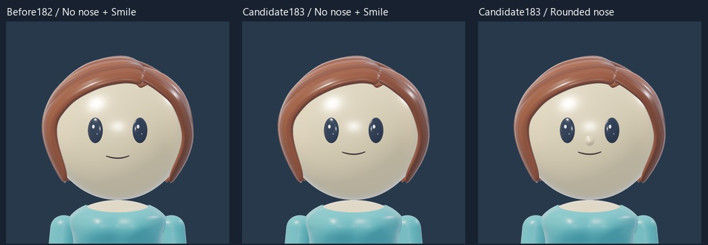
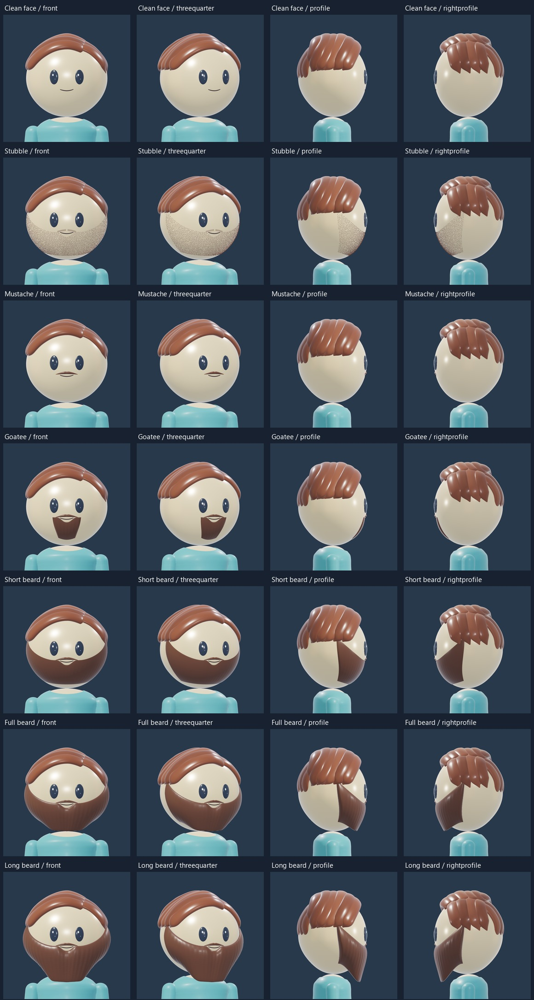
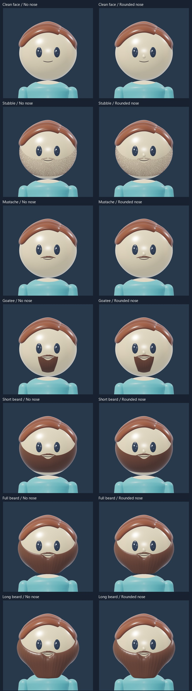
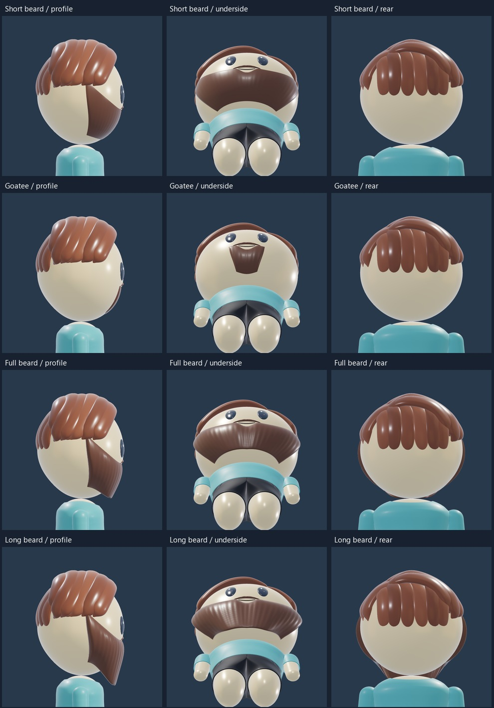
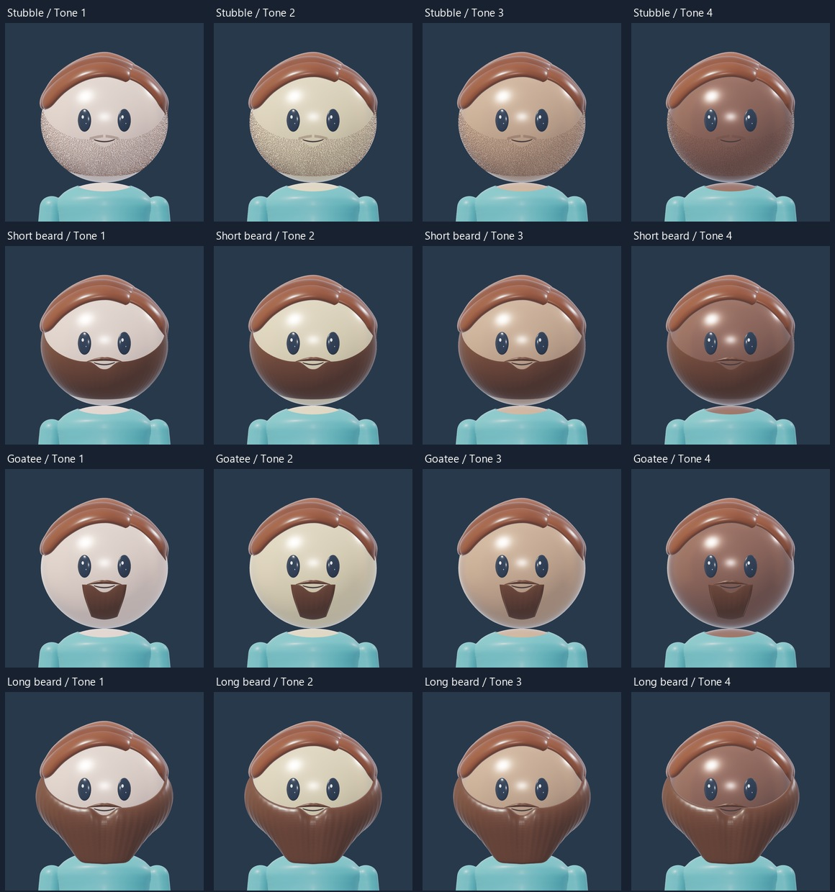
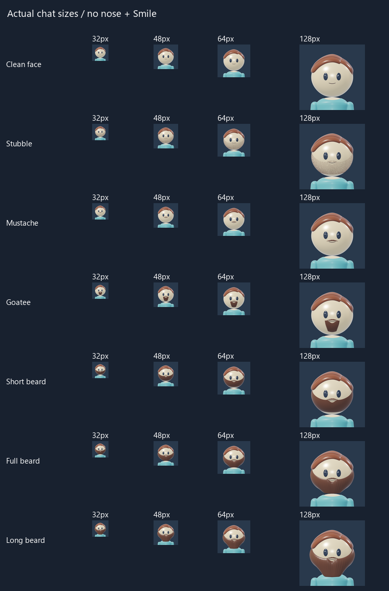

GROOMING STUDY · 183
Facial hair and face placement
Six maintained facial-hair styles, rebuilt for the cartoon character using our earlier grooming work as direction. Compare a clean face with each style, with no nose or the restored Rounded nose. Mouth and nose placement are a candidate adjustment, awaiting your review.

Blender render · T-shirt / Skirt / Light warmLoad 3D to mix outfits, rotate and zoom. Each build remembers its selections.
Rotate, zoom and compare with one consistent 3D lighting setup. Rotate and zoom to inspect the beard edges, mouth opening and under-chin fit. The head, eyes, scalp hair, body, palette and fixed 3D lighting are retained.
Face placement · before and candidate
The clean-face comparisons use the same camera, mouth shape and lighting. The mouth is slightly higher; the restored Rounded nose is grouped more closely with it.


Grooming · front, angle and both sides
Shared sideburn coverage for Stubble, Short, Full and Long. Full and Long share the same mustache; their length and volume differ. Chin beard stays retired.

No nose or Rounded nose

Under the chin and longer beards

Skin tones and small portraits


Source direction and scope
Native 3D grooming made for this sphere head, with sculpted masses and restrained texture. Earlier 78/79 refinements guide maintained edges and distinct lengths. Short styles now stop on the lower front face, leaving the rounded underside clear. Longer styles hang from the front with a small under-chin return. Their realistic meshes were not transferred. Grooming is currently masculine; both builds can compare the face placement.
References: Beardbrand styles and Gillette trimmed beard construction. The T-shirt assembly is retained; other wardrobe fitting remains separate. This study changes no profile-byte contract or main Studio master.